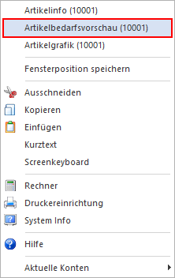
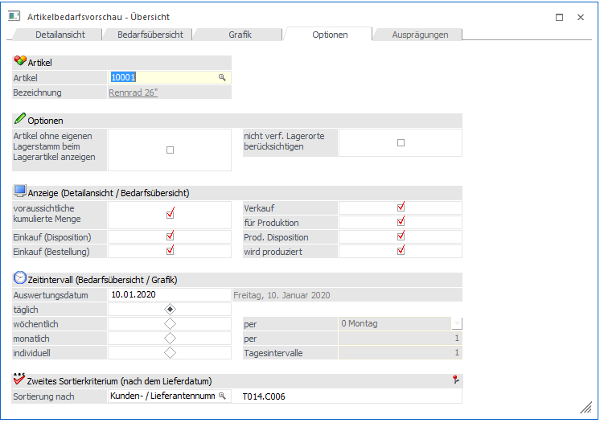
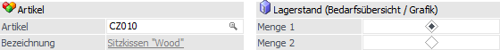
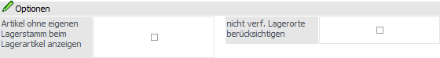
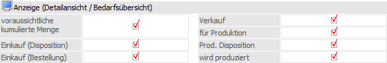
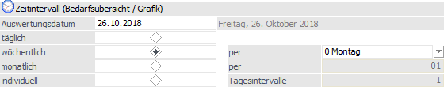
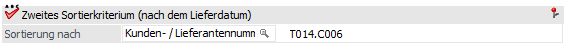
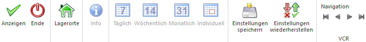

Die Artikelbedarfsvorschau zeigt den voraussichtlichen Artikelbedarf (sogenannte "Dispositionen") für ein Produkt zu einem bestimmten Zeitpunkt an, wobei selektiv ausgewählt werden kann, welche Einflussfaktoren auf diesen Artikelbedarf wirken sollen.
Der Aufruf der Bedarfsvorschau kann hierbei in jedem Feld, in welchem die Artikelnummer eingegeben werden kann, über das Kontextmenü der rechten Maustaste (Funktion "Bedarfsvorschau") erfolgen (z.B. in der Belegerfassung, dem Artikelstamm, etc.).

Das Fenster ist in die folgenden Register unterteilt:
ü Register "Detailansicht"
In diesem
Register werden die Dispositionszeilen in Form einer Tabelle dargestellt.
ü Register "Bedarfsübersicht"
In
diesem Register werden die Dispositionszeilen in Form eines Zeitstrahls
aufbereitet.
ü Register "Grafik"
In diesem
Register werden die Dispositionszeilen in Form einer Grafik dargestellt.
ü Register "Optionen" (aktuelles
Register)
In diesem Register können Einstellungen für die Darstellung der
Artikelbedarfsvorschau getroffen werden.
ü Register "Ausprägungen"
Handelt es
sich bei dem Artikel um einen Hauptartikel mit Ausprägungen, dann werden in
diesem Register Detailinformationen über die Ausprägungen angezeigt.
Register "Optionen"

In diesem Fenster können die Optionen für die Register "Detailansicht", "Bedarfsübersicht" und "Grafik" angepasst werden.
Auswahl / Lagerstand

Ø Artikel
An dieser Stelle wird die Artikelnummer des Produktes angezeigt, welches aktuell in der Bedarfsvorschau betrachtet wird. Durch die Änderung der Artikelnummer werden die Informationen in allen anderen Registern entsprechend angepasst.
Ø Bezeichnung
In diesem Feld wird die Artikelbezeichnung des Produktes angezeigt, welches aktuell in der Bedarfsvorschau betrachtet wird.
Ø Lagerstand (Bedarfsübersicht / Grafik)
Bei Artikeln mit 2 Mengen kann an dieser Stelle definiert werden, welcher Lagerstand in den Registern "Bedarfsübersicht" und "Grafik" angezeigt werden soll.
Optionen

Ø Artikel ohne eig. Lager beim Lagerartikel anzeigen
Diese Option hat - je nachdem welcher Artikel verwendet wird - unterschiedliche Auswirkungen:
ü Artikel verweist mit dem
Lagerstand auf anderen Artikel
Ist die Checkbox aktiv, dann werden für den
Artikel keine Zeilen in der Liste angezeigt, auch wenn welche vorhanden sind.
D.h. in dem Fall werden die Dispo-Zeilen nur beim Lagerartikel angezeigt.
Ist
die Checkbox inaktiv, dann werden für den Artikel die vorhandenen Dispo-Zeilen
angezeigt.
ü Ein anderer Artikel verweist mit
dem Lagerstand auf den aktuellen Artikel
Ist die Checkbox aktiv, dann werden
alle Dispo-Zeilen für den ausgewählten Artikel und alle Zeilen der Artikel
angezeigt, die mit den Lager auf den aktuellen Artikel verweisen.
Ist die
Checkbox inaktiv, dann werden für den Artikel nur die vorhandenen Dispo-Zeilen
angezeigt.
Ø nicht verf. Lagerorten berücksichtigen
Im Standard wird jener Bestand, welcher sich auf nicht verfügbaren Lagerorten des Lagermanagement befindet, vom aktuellen Lagerstand abgezogen und separat ausgewiesen. Wenn dieses nicht gewünscht ist, so kann diese Option aktiviert werden.
Anzeige (Detailansicht / Bedarfsübersicht)

In dem Bereich "Anzeige" kann definiert werden, welche Bedarfszeilen in den Registern "Detailansicht" und "Bedarfsübersicht" ausgewiesen werden sollen.
Ø Voraussichtliche kumulierte Menge
Ausgabe des aktuellen Lagerstandes (unabhängig vom Stichtag oder dem Beobachtungszeitraum, welcher gewählt wurde).
Ø Einkauf (Disposition)
Bei Dispositions-Zeilen dieses Typs handelt es sich um Bedarfszeilen, bei denen eine Bestellung geplant, aber noch durchgeführt wurde. Solche Zeilen können wie folgt erzeugt werden:
ü Automatischer Bestellvorschlag
ü Erfassung eines Auftrags mit Artikeln des Reservierungstyp "1 - Auftragsbezogenen Produktion / Bestellung)
Achtung
In der Belegart muss die Option "Auftragsbezogene Produktion/Bestellung" aktiviert sein.
ü Anwahl des Tabellenbuttons "Datum übernehmen" (Tabelle "Lieferanten")
Ø Einkauf (Bestellung)
Sobald eine Lieferantenbestellung (Belegstufe "6 - L.Bestellung") gedruckt bzw. gerechnet wurde - und in der Belegart die Option "Bestellbestand verändern" aktiviert ist - wird die Belegzeile als Dispositionszeile dieses Typs aufgeführt.
Ø Verkauf
Sobald eine Kundenauftragsbestätigung (Belegstufe "2 - Auftrag") gedruckt bzw. gerechnet wurde - und in der Belegart die Option "Bestellbestand verändern" aktiviert ist - wird die Belegzeile als Dispositionszeile dieses Typs aufgeführt.
Ø für Produktion
Artikel können nicht durch direkt Verkauf, sondern auch für die Herstellung von Produktionsartikel oder Handelsstücklisten benötigt werden. In solch einen Fall spricht man von einer sogenannten Komponente.
Wird ein Produktionsauftrag in der WinLine PPS erzeugt oder ein Auftrag mit einer Handelsstückliste / einem Produktionsartikel in der WinLine FAKT angelegt, so wird der Bedarf an dem Artikel (d.h. der Komponente) mit Hilfe solch einer Dispositionszeilen angezeigt.
Achtung
Wird die Handelsstückliste bzw. der Produktionsartikel "vom Lager" genommen, so wird keine "für Produktion"-Zeile erzeugt
Ø Prod. Disposition
Bei Dispositions-Zeilen dieses Typs handelt es sich um Bedarfszeilen, bei denen ein Produktionsauftrag geplant, aber noch eingelastet wurde. Solche Zeilen können wie folgt erzeugt werden:
ü Automatischer Bestellvorschlag
ü Erfassung eines Auftrags mit Produktionsartikeln des Reservierungstyp "1 - Auftragsbezogenen Produktion / Bestellung" und der Option "Stücklistenfenster nicht öffnen"
Achtung
In der Belegart muss die Option "Auftragsbezogene Produktion/Bestellung" aktiviert sein.
Ø wird produziert
Sobald für einen Produktionsartikel ein Auftrag im Modul WinLine PPS eingeplant wurde, so wird für diesen Artikel eine Dispositionszeile des Typs "wird produziert" erzeugt.
Handelt es sich bei dem Artikel um eine Handelsstückliste und es wird für diese ein Auftrag erzeugt, so wird ebenfalls eine "wird produziert"-Zeile generiert.
Achtung
Wird die Handelsstückliste bzw. der Produktionsartikel "vom Lager" genommen, so wird keine "wird produziert"-Zeile erzeugt.
Zeitintervall (Bedarfsübersicht / Grafik)

Hier können die Einstellungen für die Anzeige der Bedarfsübersicht und der Grafik angepasst werden, wobei die gewählte und gespeicherte Auswahl den Standard darstellt.
Ø Auswertungsdatum
Das Auswertedatum (Einstiegsdatum in das Programm) wird vorgeschlagen und kann verändert werden.
Ø Zeitintervall
An dieser Stelle kann der Standard-Zeitraum und der individuelle Intervall eingestellt werden.
ü täglich
Es ist keine
Anpassung möglich. Die Zeitschiene wird pro Tag gebildet.
ü wöchentlich
Es kann
eingestellt werden, welcher Wochentag der Stichtag für die Auswertung sein
soll.
ü monatlich
Es kann ausgewählt
werden, welcher Monatstag der Stichtag für die Zeitschiene sein soll. Der Tag
muss mit 2 Stellen eingegeben werden.
ü individuell
Im Feld
"Tagesintervall" kann die Anzahl der Tage eingegeben werden, für die immer eine
Summe gebildet werden soll.
Hinweis
Bei der Einstellung "90" werden im Register "Grafik" Quartale angezeigt. Wird der Tagesintervall mit "365" oder "366" definiert, so werden Jahre dargestellt.
Zweites Sortierkriterium (nach Lieferdatum)

Ø Sortierung nach
Für die weitere Sortierung kann ein Wert/Feld aus der Artikeldispositionstabelle (T014) gewählt werden. Für die Suche steht der Matchcode zur Verfügung. Das selektierte Feld wird benutzerspezifisch gespeichert.
Buttons

Ø Anzeigen
Durch Anwahl des Buttons "Anzeigen" bzw. der Taste F5 wird die Anzeige der Bedarfsvorschau, gemäß der aktuell gewählten Einstellungen, aktualisiert.
Ø Ende
Durch Anklicken des Buttons "Ende" bzw. der Taste ESC wird das Fenster geschlossen.
Ø Lagerorte
Bei Anwahl des Buttons "Lagerorte" wird das Programm "Artikel - Lagerorte" aufgerufen und die aktuellen Lagerorte des Artikels dargestellt.
Ø Info (nur im Register "Bedarfsübersicht" und "Grafik")
Durch Anwahl des Buttons "Info" wird die aktuelle Zeitschiene in Form einer Grafik am Bildschirm ausgegeben.
Ø Täglich / Wöchentlich / Monatlich / Individuell (nur im Register "Bedarfsübersicht" und "Grafik")
Durch Anwahl der Buttons kann der Zeitintervall für die Anzeige geändert werden.
Ø Einstellungen speichern (nur im Register "Optionen")
Mit Hilfe des Buttons "Einstellungen speichern" werden die vorgenommenen Einstellungen benutzerspezifisch gespeichert.
Ø Einstellungen wiederherstellen (nur im Register "Optionen")
Durch Anwahl des Buttons werden die zuletzt gespeicherten Einstellungen geladen.
Ø VCR-Buttons
Über die so genannten VCR-Buttons, welche in jedem Register zur Verfügung stehen, kann durch Mausklick zwischen den Datensätzen geblättert werden.
ü  Damit kann der
erste Datensatz angesprochen werden.
Damit kann der
erste Datensatz angesprochen werden.
ü  Damit kann der
vorherige Datensatz angesprochen werden.
Damit kann der
vorherige Datensatz angesprochen werden.
ü  Damit kann der
nächste Datensatz angesprochen werden.
Damit kann der
nächste Datensatz angesprochen werden.
ü  Damit kann der
letzte Datensatz angesprochen werden.
Damit kann der
letzte Datensatz angesprochen werden.
Hinweis
Beim Blättern zwischen den Artikel-Datensätzen werden Ausprägungen standardmäßig "überblättert", d.h. es wird von einem Hauptartikel zum nächsten geblättert. Sollten auch Ausprägungen berücksichtigt werden, so muss beim Blättern zusätzlich die STRG-Taste gedrückt werden.